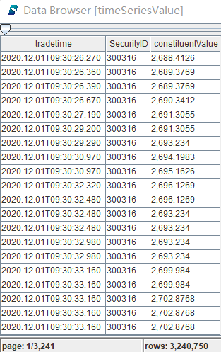
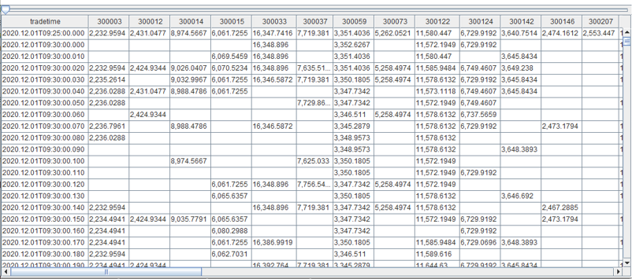

基金份额参考价值 IOPV 计算
Indicative Optimized Portfolio Value (IOPV) 全称为基金份额参考净值，是由交易所计算的 ETF 实时单位净值的近似值，便于投资者估计 ETF 交易价格是否偏离了其内在价值。ETF 最新价为场内价格，是该 ETF 在二级市场交易的买卖价格。而 IOPV 是这只 ETF 在一级市场的报价，即为 ETF 的净值。IOPV 是 ETF 基金特有，是场内 ETF 的参考值，方便投资者参与套利。
目前交易所每隔 15 秒公开发布 IOPV 行情。本教程介绍如何使用 DolphinDB 实时计算 ETF 的 IOPV，亦即任何成分股的交易价格发生变化时，重新计算 EFT 的最新 IOPV。这将给量化策略更多多操作空间。 生产环境中实时计算主要有 3 个要求：(1) 能够实现 IOPV 复杂计算；(2) 计算快、交易信号捕捉要灵敏；(3) 具备从行情输入、计算到结果输出完整的实时处理能力。
本教程中将会学习到:
- 使用
pivot处理面板数据 - 使用行情回放函数
replayDS - 如何进行增量计算
- 流式计算横截面引擎
CrossSectionalEngine，响应式状态引擎ReactiveStateEngine - 函数
ffill,rowSum - 使用消息中间件
zmq
1. 计算公式
1.1. 标准 IOPV 计算公式
计算公式如下：
- P_i：T 日申购赎回清单中第 i 只成分券的实时价格，取净价
- Shares_i：T 日申购赎回清单中第 i 只成分券的数量（单位：手）
- AI：T 日申购赎回清单中所有成分券在 T 日的应计利息总和
- ECC：T 日申购赎回清单中的预估现金部分（Estimated Cash Component）
1.2. 本教程 IOPV 计算公式
在无法获得 ETF 基金参考数据源的情况下，我们采用数据模拟构建的方式，因此有以下调整。
成分券构建
假设每只基金都为 50 只成分券，采用固定和随机两种方式构建成分券。
计算公式调整
不将 AI 和 ECC 纳入 IOPV 计算公式中，对计算方法和计算性能影响较小。
2. 指数构建
固定标的构建用于单只指数的历史和实时 IOPV 计算，随机标的构建用于多只指数的实时 IOPV 计算。
2.1. 固定标的构建
选取 50 只深市股票作为成分券，并为每只成分券设置一个随机仓位，然后构建一个 “字典” 类型的指数。
symbols = `300073`300363`300373`300474`300682`300769`301029`300390`300957`300763`300979`300919`300037`300832`300866`300896`300751`300223`300676`300274`300413`300496`300661`300782`300142`300759`300595`300285`300146`300207`300316`300454`300529`300699`300628`300760`300601`300450`300433`300408`300347`300124`300122`300059`300033`300015`300014`300012`300003`300750 positions = rand(76339..145256, 50) portfolio = dict(symbols, positions)
2.2. 随机标的构建
getBasketData() 函数会构建100只指数，在深市股票逐笔成交中随机选取50只股票作为成分股，并设置随机仓位。
def getBasketData(allSymbol, n){
return loop(x->table(take(x, 50) as BasketID, rand(allSymbol, 50) as SecurityID, rand(76339..145256, 50) as Vol), 1..n).unionAll(false)
}
trade = loadTable("dfs://LEVEL2_SZ","Trade")
allSyms = select count(*) from trade where date(tradetime) = 2020.01.02 group by SecurityID
basket = getBasketData(allSyms.SecurityID, 100)2.3. 逐笔成交数据表结构
采用深交所 Level2 逐笔成交进行 IOPV 计算，表结构如下：
| name | typeString | typeInt | comment |
|---|---|---|---|
| tradedate | DATE | 6 | |
| OrigTime | TIMESTAMP | 12 | |
| SendTime | TIMESTAMP | 12 | |
| recvtime | TIMESTAMP | 12 | |
| dbtime | TIMESTAMP | 12 | |
| ChannelNo | INT | 4 | |
| MDStreamID | SYMBOL | 17 | |
| ApplSeqNum | LONG | 5 | |
| SecurityID | SYMBOL | 17 | |
| SecurityIDSource | SYMBOL | 17 | |
| BidApplSeqNum | INT | 4 | |
| OfferApplSeqNum | INT | 4 | |
| Price | DOUBLE | 16 | |
| TradeQty | INT | 4 | |
| ExecType | SYMBOL | 17 | |
| tradetime | TIMESTAMP | 12 |
3. 历史 IOPV 计算
3.1. 传统 IOPV 计算方法
基于历史逐笔成交计算更细颗粒度的 IOPV，传统计算方法如下：
将50只成分券的所有逐笔数据合并，并按照时间戳排序。计算时按时间戳遍历股票数据，计算每个时间戳 50 只股票的总价值，作为当前时间戳的 IOPV。若某一时间戳下，存在股票数据缺失，则用前一时间戳下该股票的数据进行填充。在程序中需要分别记录50只股票最近一个时间戳的价格并随时更新。
传统计算方法有几点不足：
- 传统方法采用循环的方式遍历计算，导致性能不高。
- 会存在不同股票相同时间戳的数据，需要代码判断读到最新时间戳才能触发汇总计算逻辑，导致代码复杂。
- 需要把前一股票价值手工存储在一个变量里，并随时更新这个变量，导致代码复杂。
因此，基于逐笔成交的传统 IOPV 计算方法会有耗时长和代码复杂两个缺点。
3.2. DolphinDB 数据面板计算方法
在 DolphinDB 中利用 pivot by 生成一个数据面板（矩阵），再对矩阵进行向量化运算可以提高计算速度，同时代码更为简洁。
timeSeriesValue = select tradetime, SecurityID, price * portfolio[SecurityID]/1000 as constituentValue from loadTable("dfs://LEVEL2_SZ","Trade") where SecurityID in portfolio.keys(), tradedate = 2020.12.01, price > 0 iopvHist = select rowSum(ffill(constituentValue)) as IOPV from timeSeriesValue pivot by tradetime, SecurityID
- 计算股票价值
timeSeriesValue 得到每个时间戳下的所有成分券价值，本次代码示例计算深交所 2021.12.01 这一日的逐笔成交的历史 IOPV，其中 loadTable("dfs://LEVEL2_SZ","Trade") 使用的是逐笔成交表。

上图中 constituentValue 是每一时间戳时当前股票仓位的价值。
- 面板数据计算 IOPV
利用 DolphinDB 中的 pivot by 数据透视功能生成一个面板数据，横轴是50只成分券，纵轴是时间戳，数据点代表每只成分券在一个时间戳上的价值。

对面板数据的纵轴（时间序列）的空置填充最近前一笔有效价值，再对横轴（成分券）汇总即可得到每个时间戳上的 IOPV 结果。
ffill会找到前一笔最近的非空值，相当于传统方法取前一股票价值。rowSum对横向行数据汇总，即把所有成分券的价值汇总得出 IOPV。
在 DolphinDB 中使用一行代码就能完成传统 IOPV 计算步骤3中的复杂逻辑；同时，DolphinDB 是向量计算，能够充分利用多线程完成高效运算。
面板数据有以下优点，参考阅读 Baltagi, Econometric Analysis of Panel Data Chapter 1 1.2 Why should we use Panel Data? The Benefits and Limitations:
Benefits
- Controlling for individual heterogeneity.
- Panel data give more informative data, more variablility, less collinearity among the variables, more degrees of freedom and more effciency.
- Panel data are better able to study the dymanics of adjustment.
- Panel data are better able to identify and measure effects that are simply not detectable in pure cross-section or pure time-series data.
- Panel data models allow us to construct and test more complicated behavioral models than purely cross-section or time-series data.
- Micro panel data gathered on individuals, firms and households may be more accurately measured than similar variables measured at the macro level.
- Macro panel data on the other hand have a longer time series and unlike the problem of nonstandard distributions typical of units roots tests in time-series analysis.
Limitations
- Design and data collection problems.
- Distortions of measurement errors.
- Selectivity problems.
- Short time-series dimensions.
- Cross-section dependence.
4. 单只 ETF 实时计算
案例代码展示从[数据接入]->[实时计算]->[下游系统消费]一个完整的流数据处理流程。
只要通过3段代码即可实现完整的业务逻辑：
4.1. [数据接入] replayDS：历史行情回放
通过历史行情回放的形式模拟实时行情。使用 DolphinDB 内置的 replayDS 函数能够轻松实现数据回放，实际投研和生产中还可以使用 replayDS 多表联合回放成交、订单和快照行情。
t = streamTable(100:0, `SecurityID`tradedate`tradetime`price,[SYMBOL, DATE,TIMESTAMP,DOUBLE]) enableTableShareAndPersistence(table=t, tableName=`TradeStreamData, cacheSize=1000000) rds = replayDS(<select SecurityID, tradedate, tradetime , price from loadTable("dfs://LEVEL2_SZ","Trade") where tradedate = 2020.12.01, price>0 >, `tradedate, `tradetime, cutPoints(09:30:00.000..16:00:00.000, 60)); submitJob("replay_order", "replay_trades_stream", replay, rds, `TradeStreamData, `tradedate, `tradetime, 1000000, true, 4)
上段代码回放了 2020.12.01 这一天的逐笔成交数据，并把回放数据写入到流数据表 TradeStreamData 中。
4.2. [实时计算] IOPV 横截面计算
使用横截面计算引擎 CrossSectionalEngine 计算 IOPV
share streamTable(1000:0, `tradetime`tradedate`IOPV, [TIMESTAMP,DATE,DOUBLE]) as IOPVStreamResult IOPV_engine = createCrossSectionalEngine(name="IOPV_calculator", metrics=[<last(tradedate)>, <sum(ffill(price) * portfolio[SecurityID]/1000)>], dummyTable=TradeStreamData, outputTable=IOPVStreamResult, keyColumn=`SecurityID, triggeringPattern='perRow', timeColumn=`tradetime, useSystemTime=false) setStreamTableFilterColumn(TradeStreamData, `SecurityID) subscribeTable(tableName="TradeStreamData", actionName="trade_subscribe", offset=0, handler=append!{IOPV_engine}, msgAsTable=true, batchSize=10000, throttle=1, hash=0, filter=portfolio.keys());
- 上段代码首先创建了流表
IOPVStreamResult，将在这个流表中存储 IOPV 计算结果； IOPV_engine行实现了 IOPV 的业务逻辑，由于 IOPV 也是一个横截面计算，这里使用了横截面引擎；- 最后 subscribeTable 的时候执行
IOPV_engine计算引擎，只读取成分券portfolio.key()的行情数据，这种数据过滤处理可以提高执行速度。
横截面计算逻辑：
- 横截面计算 (
createCrossSectionalEngine)，顾名思义就是一个时间戳（时间截面）上的计算，也可以表述为多只股票的数据在同一时间截面 (同一时间戳）上的计算。在这个例子中，就是一个时间截面（时间戳）上需要汇总（sum）所有的股票价值得到净值。 - 在实时 IOPV 计算时，只要收到了一只成分券的最新价格，就计算一次 IOPV，所以设置了
triggeringPattern='perRow'；代表只要收到一笔新的逐笔成交行情，就会触发一次 IOPV 计算。 metrics=[<last(tradedate)>, <sum(ffill(price) * portfolio[SecurityID]/1000)>]是 IOPV 计算的业务逻辑。
4.3. [下游系统消费]通过 ZMQ 消费计算结果
try{
formatter = zmq::createJSONFormatter()
socket = zmq::socket("ZMQ_PUB", formatter)
zmq::bind(socket, "tcp://*:20414")
}catch(ex){}
subscribeTable(tableName="IOPVStreamResult", actionName="IOPV_mq_read", offset=0, handler=zmq::send{socket}, msgAsTable=true)- 在下游系统中订阅数据时通过 ZMQ handler 接收数据
- 下游系统根据实时 IOPV 创建交易策略（本教程未包含策略实现
- 参考DolphinDB zmq Plugin
5. 多只 ETF 实时增量计算
计算全市场500多只 ETF IOPV 时，如果使用实时计算（单只-etf-实时计算）的方法，由于每次收到新的逐笔成交就要做一次汇总，计算量会非常庞大，因此不是最优方案。通过 DolphinDB 响应式状态引擎增量计算，可以大幅降低算法计算步骤，计算更加高效。
核心代码如下：
5.1. 过滤价格不变数据
基于逐笔数据，两个相邻行情中有大量最新价一致的数据，首先可以过滤这些数据，在增量计算中他们不对净值结果产生影响。
metricsFuc = [
<tradetime>,
<Price>]
createReactiveStateEngine(name="tradeProcessPriceChange", metrics=metricsFuc, dummyTable=tradeOriginalStream, outputTable=tradeOriginalStream, keyColumn=`SecurityID, filter=<deltas(Price) != 0>, keepOrder=true)上段代码只会把 deltas(Price) != 0，即价格发生了变化的股票用于后续的估值计算。
5.2. 增量算子计算
只计算变化量.
metricsProcess = [
<tradetime>,
<deltas(Price*Vol/1000)>]
createReactiveStateEngine(name="tradeProcessIOPVChange", metrics=metricsProcess, dummyTable=tradeProcessDummy, outputTable=getStreamEngine(`IOPVResult), keyColumn=`BasketID`SecurityID, keepOrder=true)上端代码中通过元代码 <deltas(Price*Vol/1000)> 计算 delta 变化量，即增量算子。
5.3. 增量计算
DolphinDB 内置的累计聚合函数 cumsum 实现了增量计算。
metricsResult = [
<tradetime>,
<cumsum(deltaValue)>]
createReactiveStateEngine(name="IOPVResult", metrics=metricsResult, dummyTable=tradeResultDummy, outputTable=IOPVResult, keyColumn=`BasketID, keepOrder=true)响应式状态引擎的增量计算逻辑如下：
- 我们先简单创建一张估值表，包含
"securityID","price","vol","value"四个字段，其中value=price*vol。 - 计算 IOPV*1000，只需要把10只票的价值相加即可。
securityID=1这只票的价格发生了变化，变成了15.41。- 只需要计算变化量
deltas= (new price – last price) * vol - 增量计算净值
New IOPV*1000= Last IOPV * 1000 + deltas，这种算法的时间复杂度最低，不再需要rowSum计算。非增量算法如图所示计算量较大。 - 在示例中有段
<filter=<deltas(Price) != 0>过滤器代码，如果价格没有变化，则净值不会变化，不需要计算。相当于实现了ffill。
注意：采用响应式式状态引擎 ReactiveStateEngine 的主要作用是需要记录计算过程中的状态。如图公式 deltas= (new price – last price) * vol, 该公式中的 price 和 vol 只能是 securitID=1 的价格和持仓量，也称为需要记录 “状态”。
6. 回顾
本教程展示了基于 DolphinDB 的多种 IOPV 计算方法。
- 历史 IOPV 计算: 学习了使用
piovt进行面板数据处理，pivot by是 DolphinDB 中极为常用的数据处理方式，与 python 中的 DataFrame 极为类似，使用pivot by可以数据处理简单和高效。 - 单只 ETF 实时计算: 学习了横截面计算引擎和实时数据[数据接入]->[实时计算]->[下游系统消费]完整的处理流程。
- 多只 ETF 实时计算: 学习了通过响应式状态引擎实现增量计算，相较于 “单只指数实时计算”，其计算效率更高。